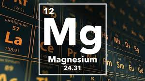

MAGNESIUM

PROPERTIES
1)magnesium is very chemically active, it takes the place of hydrogen in boiling water.
2)It joins together with most non-metals and almost every acid
3)Magnesium reacts only slightly with most of the alkalis and many organic substances, like hydrocarbons, alcohols and most of the oils
4)magnesium promotes organic reactions of condensation, reduction, addition
5)It was used for a long time for synthesizing special and complex organic components by the well-known Grignard reaction
6)Magnesium components are widely used in industry and agriculture.
Reaction with air
2Mg + O2 → 2MgO
Reaction with acids
Mg(s) + 2 HCl(aq) --> MgCl 2(aq) + H 2(g)
Reaction with water
Mg+2H2O→Mg(OH)2+H2.